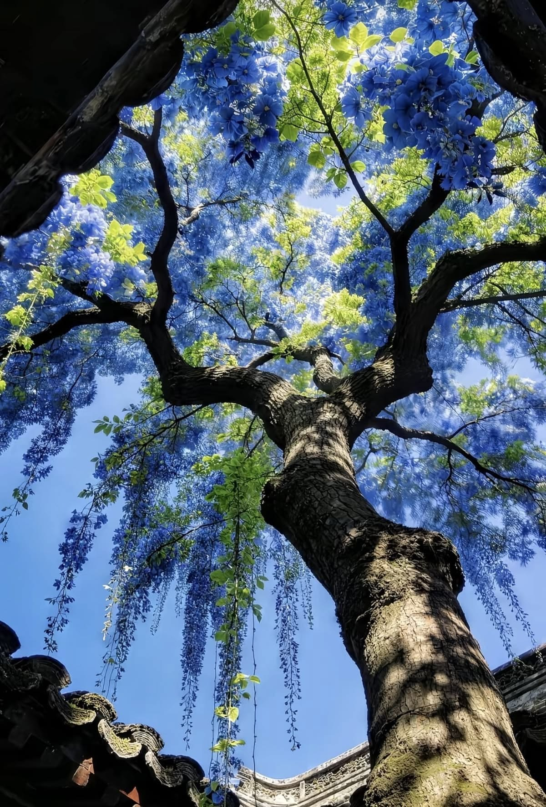
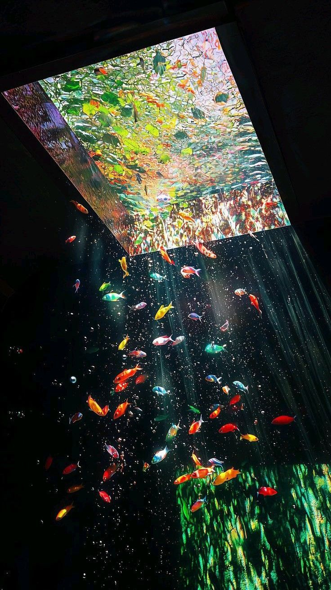
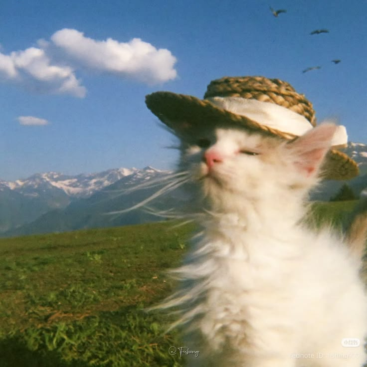

This website is dedicated to showcasing the beautiful colors found in nature. From vibrant flowers to breathtaking landscapes, we aim to bring the beauty of the natural world to your screen. Explore our collection of images and immerse yourself in the wonders of nature.
Every corner of our planet tells a unique visual story through an extraordinary spectrum of hues, inviting us to pause and appreciate the intricate details of the earth. Whether you are seeking a moment of peace during a busy day, looking for fresh inspiration, or simply wishing to deepen your connection to the outdoors, our collection celebrates the quiet magic of the world around us.
Join us in preserving and appreciating these breathtaking moments, and let every shade remind you of the boundless beauty that thrives just outside your door.

The Japanese wisteria with its distinctive falling leaves emitting a blue and green colorful show.

A school of colorful fish swimming in the light.

A cute baby kitten with a small sun hat enjoying the sun with mountains as a background.